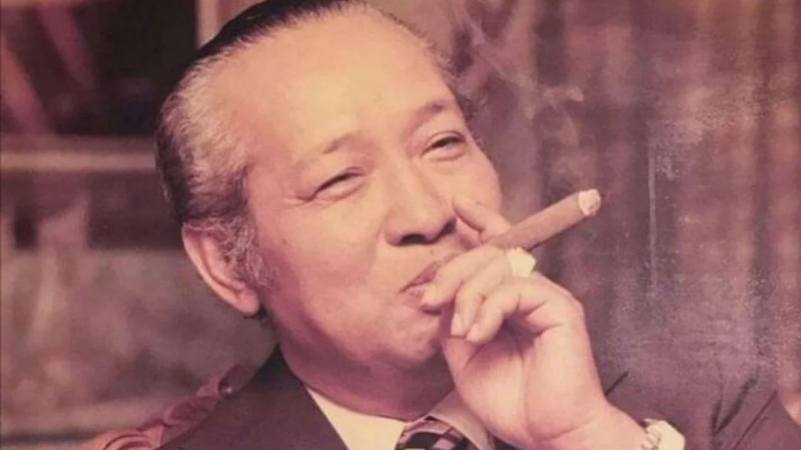

Jenderal Besar TNI (Purn.) H. M.Soeharto
Sang Jenderal yang Tersenyum

Pemimpin militer pada masa Hindia Belanda dan Kekaisaran Jepang, dengan pangkat terakhir Mayor Jenderal
Ini adalah timeline Jenderal Besar TNI (Purn.) H. M.Soeharto:
- 12 Maret 1967 – 21 Mei 1998: Presiden Indonesia ke-2
- 7 September 1992 – 20 Oktober 1995: Sekretaris Jenderal Gerakan Non-Blok ke-16
- 6 Juni 1968 – 28 Maret 1973: Panglima Angkatan Bersenjata Republik Indonesia ke-5
- 28 Maret 1966 – 28 Maret 1973: Menteri Pertahanan Keamanan Republik Indonesia ke-13
- 5 Oktober 1965 – 19 November 1969: Panglima Komando Operasi Pemulihan Keamanan dan Ketertiban ke-1 dan ke-5
- 16 Oktober 1965 – 1 Mei 1968: Kepala Staf TNI Angkatan Darat ke-8
- 1965 – 22 Agustus 1966: Kepala Badan Intelijen Negara ke-3
- 25 Juli 1966 – 17 Oktober 1967: Ketua Presidium Kabinet Indonesia ke-1
- 6 Maret 1961 – 2 Desember 1965: Panglima Kostrad ke-1